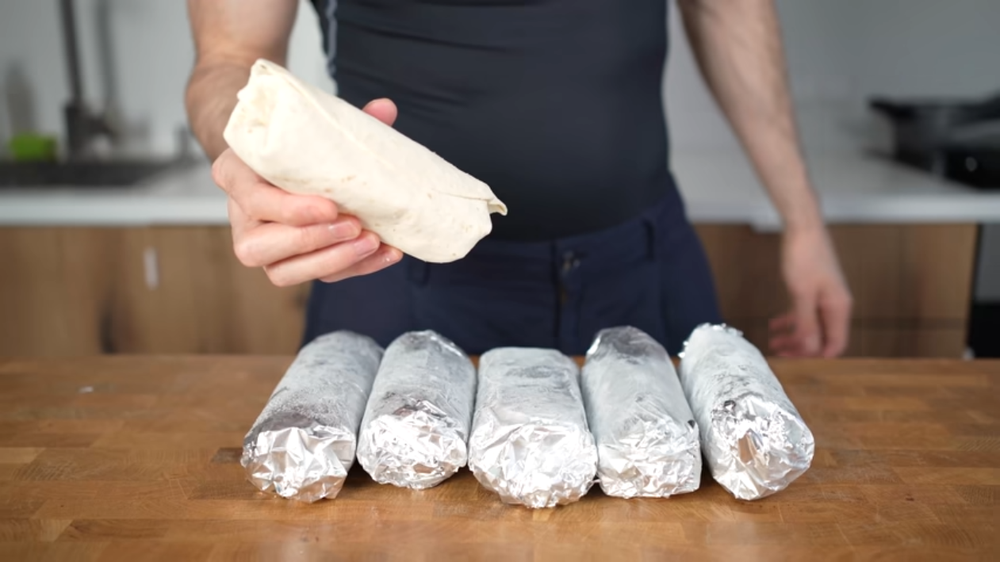

Burrito

Description
Some great burritos that are filling and tasty. They are made to have lots of protein
and not too high in calories.
This recipe is for 1 serving but I typically make however many I can with the amount of meat I purchased,
freezing any burritos I won't eat within ~4 days.
Ingredients
- 10''/25cm Wheat Tortilla [x6]
- Ground beef (or chicken/turkey) [2 lbs] (900g)
- Yellow Onion [250g]
- Sieved or puree canned tomato [300g]
- Laughing cow wedges [x4]
- Shredded mozzarella [120g]
- Salt
- Pepper
- Oregano
- Garlic powder
- (Optional) Salsa verde
Steps
- With 300g of canned tomato; add ~1 tbsp. Salt, ~1.5 tbsp. Black pepper, ~2 tsp. Oregano then Mix.
- Dice onions.
- Use a big pan with oil on medium-high.
- Add beef for 4-5 minutes. While cooking add some salt and black pepper as needed along with ~1 tsp. of garlic powder.
- Stir occasionally until mostly brown then add chopped onion, continue to stir.
- After ~11 minutes add tomato sauce then stir well.
- Add 4 cheese wedges, stirring for a few minutes until cheese is melted in with beef.
- Now add 120g of shredded mozzarella and stir again until melted
- (Optional) Add to plate and let cool in fridge or on counter so the hot beef does not cause tortillas to become soggy and weak.
- Lay burrito on aluminum foil (optionally also use parchment paper to make reheating better) then add ~250g of meat on each tortilla and roll up burrito then wrap burrito in aluminum foil.
- Put burritos in the fridge or in a ziploc bag then in the freezer.